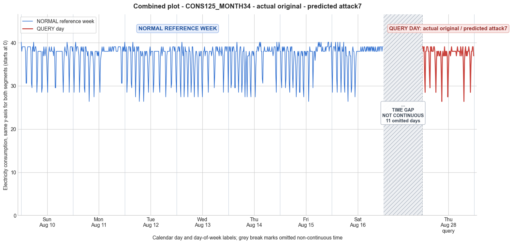

CONS125_MONTH34 · actual original · predicted attack7
- Pair
- CONS125_MONTH34
- GT
- original
- Prediction
- attack7
- Binary GT
- original
- Binary Prediction
- attacked
- Source
- E010
- Parse
- stored
- Date
- 2014-08-28
- Weekday
- Thursday
- Latency
- 3.23 min
- Tokens
- 13138

Final output
Classification: Manipulated Identified Attack: - Most Likely: Attack 7 - Confidence: High - Reasoning: The query day shows a consistent uniform downward shift in all consumption values relative to the normal week. The maximum value is reduced from the typical 40.13 to exactly 39.07, while the mean (36.90) and minimum (26.40) remain within the range of normal daily statistics, strongly suggesting that a constant was subtracted from every reading. This perfectly matches Attack 7, which subtracts a random cut‑off point from each sample. Attack 6 (capping at a cut‑off) was ruled out because it would only truncate high values, leaving lower ones unchanged, which would lower the mean slightly from the reference (36.41 → ~36.35) rather than maintaining it near 36.90. Attack 1 (constant scaling factor) was ruled out because scaling would reduce the minimum proportionally, but the query day’s minimum remains at 26.40, and the max 39.07 cannot be obtained by a single factor from 40.13 without also lowering the minimum below 26.40. Attack_Behavior_Explanation: - How consumption values are manipulated relative to the normal week: A constant offset (approximately 1.06 units, inferred from the difference between normal max 40.13 and query max 39.07) is subtracted from every 15‑minute reading. For example, the normal peak of 40.13 becomes 39.07, 39.07 becomes 38.01, 38.01 becomes 36.96, and so forth. - Impact on magnitude and trend: Magnitude is uniformly decreased across all intervals, lowering the mean, maximum, and (for originally higher low values) the minimum. The overall trend (temporal shape) is preserved exactly because the subtraction is constant; only the vertical offset changes. - Possible technical causes: False data injection or a partial meter bypass where the reported consumption is systematically under‑reported by a fixed amount to reduce the bill while keeping the profile realistic enough to evade simple anomaly detectors.
Prompt
You are a domain expert in smart grid security and electricity theft analysis, with deep knowledge of non-technical loss (NTL) attack patterns in smart meters. You are given: 1. A plot of one week of original (normal) energy consumption for a smart meter, provided as context for the customer's typical consumption behavior. 2. A plot of one day of energy consumption for the same smart meter, which may or may not be manipulated. Below are common attack types, each defined by how consumption values are altered, their impact on magnitude and trend, and their possible technical causes. Attack 0: Generated by replacing all electricity consumption samples with zero values for the entire observation duration. Simulates a scenario where no energy usage is reported at all. May be caused by a total meter bypass or severe meter malfunction. Completely eliminates both the trend and magnitude of the consumption profile. Attack 1: Multiplies the actual energy consumption by a constant random value between (0,1). The lower the factor, the higher the severity. Can be triggered by meter bypass, magnetic interference, reverse current, and false data injection. The consumption trend remains the same but the magnitude is uniformly reduced. Attack 2: Generated by replacing consumption samples with zeros for a random duration. Also known as an on-off attack. Can be caused by full meter bypass, false data injection, and reverse current. Changes both the trend and amplitude. Attack 3: The actual consumption is multiplied by different random factors between 0 and 1, with a unique factor per sample. Similar to Attack 1 but the scaling factor varies per reading. Caused by meter bypass, magnetic interference, and reverse current. Changes both the trend and amplitude. Attack 4: Simulates energy theft over a randomly selected period within the observation window. All measurements in that period are reduced. Caused by meter bypass, magnetic interference, reverse current, and false data injection. Changes both the trend and amplitude. Attack 5: Each sample is replaced by a false value obtained by multiplying the average normal consumption by a random variable between 0 and 1, with a different variable per sample. Caused by false data injection. Produces a completely different pattern from the original consumption profile, changing both trend and magnitude. Attack 6: A random cut-off point is selected and all consumption values above it are replaced by that cut-off value. The attacker avoids exceeding a predefined maximum limit. Mainly caused by false data injection. Changes both the trend and amplitude. Attack 7: A random cut-off point is subtracted from each sample; if the result is negative, zero is reported. Similar to Attack 6 but replaces exceeding values with zero instead of the cut-off point. May be caused by false data injection or total meter bypass. Does not change the trend but reduces overall consumption. Attack 9: All samples are replaced by the average daily energy consumption, resulting in a flat constant profile. Easily detectable because constant consumption does not reflect normal customer behavior. Caused by false data injection. Eliminates all trends. Attack 10: Reverses the consumption pattern without reducing the total amount. Applicable when the electricity company uses time-varying pricing, allowing the attacker to shift high consumption to off-peak periods. Caused by false data injection. Changes the trend without decreasing total consumption. Attack 12: The attacker replaces their consumption pattern with that of a lower-consuming user. The legitimate user unknowingly pays the adversary's electricity bill. Caused by false data injection. Attack IEEE: For each 15-minute interval across the entire day, the consumer either reports the actual electricity consumption or substitutes it with zero. The result is a profile where some intervals reflect real consumption while others are zeroed out, creating an irregular pattern across the full day. May be caused by false data injection. Changes both the trend and amplitude. Given the two plots, determine: 1. Whether the day is attacked or original - compare the flagged day against the normal week and assess whether the consumption pattern is consistent with normal behavior or shows signs of manipulation. If the day is consistent with the customer's typical consumption behavior, classify it as original and provide no further analysis. If manipulation is detected, proceed to point 2. 2. Which attack type this most likely is - identify the single most probable attack and justify your choice based on how the flagged day deviates from the normal week. 3. The behavior of the identified attack - explain how the consumption values are manipulated, their impact on magnitude and trend, and the possible technical causes behind this type of attack. Output Format: Classification: - Original | Manipulated Identified Attack: (fill only if manipulated) - Most Likely: Attack X - Confidence: High | Medium | Low - Reasoning: Why it matches Attack X and why Attack Y and Attack Z were ruled out (list top 2 alternatives considered) Attack_Behavior_Explanation: (fill only if manipulated) - How consumption values are manipulated relative to the normal week - Impact on magnitude and trend - Possible technical causes
Reasoning content
We need to analyze whether the query day (DAY_ID=4) is manipulated or original based on comparison with the reference week. The reference week consists of 7 days (Day 0 to Day 6) of 15-min interval readings (96 per day). The query day is also a day with 96 readings. It is labeled as DAY_ID=4, but note that the reference week has Day 4 as well, but the metadata says Query day (DAY_ID=4) with cal_month=8, dow=3, dom=18. Meanwhile the reference week Day 4 also had cal_month=8, dow=3, dom=4. So the query day is a different Thursday in the same month (August) but different date (18th vs 4th). So we need to see if the pattern matches. The statistics for the query day: min=26.40, max=39.07, std=2.91, mean=36.90. The reference week days have similar stats: Day 0: min=28.51, max=40.13, std=3.16, mean=36.96; Day 1: min=26.40, max=40.13, std=3.03, mean=37.01; Day 2: min=26.40, max=40.13, std=3.66, mean=36.30; Day 3: min=27.46, max=40.13, std=3.59, mean=36.17; Day 4: min=27.46, max=40.13, std=3.63, mean=36.41; Day 5: min=26.40, max=40.13, std=3.46, mean=36.74; Day 6: min=26.40, max=40.13, std=3.17, mean=37.13. So the query day's mean 36.90 is close to typical, min 26.40 is low but within the range (many days had 26.40), max 39.07 is slightly lower than the typical max 40.13 (the reference days often had max 40.13). The std 2.91 is lower than many reference days' std (3.03-3.66), but not extremely low. So overall the summary statistics don't scream manipulation. But we need to look at temporal pattern. The query day readings: 39.07, 39.07, 38.01, 39.07, 32.73, 28.51, 38.01, 38.01, 39.07, 39.07, 39.07, 38.01, 38.01, 32.73, 29.57, 39.07, 38.01, 39.07, 38.01, 38.01, 38.01, 39.07, 39.07, 38.01, 33.79, 28.51, 35.90, 38.01, 36.96, 38.01, 38.01, 36.96, 36.96, 38.01, 38.01, 32.73, 26.40, 36.96, 38.01, 36.96, 36.96, 39.07, 36.96, 38.01, 36.96, 38.01, 36.96, 27.46, 32.73, 36.96, 38.01, 38.01, 36.96, 38.01, 39.07, 38.01, 38.01, 38.01, 38.01, 38.01, 38.01, 38.01, 38.01, 36.96, 38.01, 39.07, 38.01, 38.01, 38.01, 38.01, 36.96, 39.07, 38.01, 36.96, 38.01, 39.07, 33.79, 26.40, 35.90, 38.01, 39.07, 36.96, 38.01, 36.96, 38.01, 38.01, 39.07, 38.01, 36.96, 28.51, 34.85, 38.01, 38.01, 39.07, 39.07, 36.96 Observing the reference week's Day 4 (which was also a Thursday, but earlier date): Day 4 ref: 28.51, 39.07, 39.07, 38.01, 39.07, 29.57, 30.62, 39.07, 38.01, 39.07, 39.07, 38.01, 29.57, 29.57, 38.01, 38.01, 40.13, 38.01, 33.79, 28.51, 33.79, 38.01, 39.07, 39.07, 35.90, 28.51, 30.62, 38.01, 38.01, 39.07, 33.79, 27.46, 33.79, 38.01, 32.73, 27.46, 36.96, 36.96, 36.96, 38.01, 36.96, 29.57, 27.46, 36.96, 38.01, 38.01, 36.96, 38.01, 36.96, 34.85, 27.46, 33.79, 38.01, 38.01, 39.07, 39.07, 38.01, 39.07, 40.13, 39.07, 40.13, 38.01, 38.01, 31.68, 30.62, 38.01, 38.01, 39.07, 38.01, 38.01, 38.01, 38.01, 38.01, 39.07, 38.01, 38.01, 39.07, 38.01, 38.01, 38.01, 38.01, 39.07, 38.01, 36.96, 38.01, 39.07, 39.07, 39.07, 32.73, 28.51, 40.13, 38.01, 39.07, 38.01, 40.13, 39.07 Comparing the query day to the reference Thursday: there are differences. The query day seems to have many values like 39.07, 38.01, 36.96. Both have a typical pattern: high values (39.07, 38.01, 36.96) with occasional dips. The reference day had dips to 28.51, 27.46, 29.57, etc. The query day also has dips: 32.73, 28.51, 29.57, 33.79, 28.51, 35.90, 32.73, 26.40, 27.46, 32.73, 33.79, 26.40, 35.90, 28.51, 34.85. So the pattern includes low values similar to normal. But note that the query day's max is 39.07, while the reference day had max 40.13. Is that suspicious? In the reference week, many days had max 40.13, but some days (Day 0,1,2,3,5,6) all had max 40.13 at some point, while Day 4 had 40.13 as well. The query day never reaches 40.13. However, the mean is similar, so maybe it's just a day with slightly lower peaks. Could be natural variation. Now, investigate for any attack signature. Attack types: 0 (all zeros): Not present, readings are non-zero. 1 (multiply by constant factor 0-1): If it were scaled down, the magnitude would be uniformly reduced. The mean 36.90 is close to the reference week avg of ~36.6-37.1, so not a scaling attack. If scaling factor was ~0.98 maybe, but then the pattern would be identical shape with slight reduction. The min would also scale. However, the reference days have min 26.40, the query day has min 26.40 as well. So if scaling factor of 1.0, not attack. Could be no scaling. 2 (on-off zeros for random duration): we see no zeros at all. The readings all range above 26.40, no zeros. So no. 3 (multiply by different random factors per sample): This would cause erratic values. The query day values seem typical, similar to reference. No unusual variation. 4 (reduce over a randomly selected period): Could be. Check if there's a period where readings are consistently lower than expected relative to the typical profile? The query day has low readings like 26.40, 28.51, etc., but reference days also had such dips. The difference is that the query day never hits 40.13, but that might be normal for a different date. The overall pattern of dips is similar. For example, around intervals with 26.40, the reference Day 4 also had 27.46 and 28.51 dips. The query day has a dip at interval 37 (counting from 1: 39.07, 39.07, 38.01, 39.07, 32.73, 28.51, 38.01, 38.01, ...) and later 26.40 at interval 53. So likely normal. 5 (each sample replaced by random multiple of average normal consumption): This would produce a completely different pattern, no obvious resemblance. The query day pattern strongly resembles the reference days, with similar high values and dips, so not Attack 5. 6 (cut-off: replace values above a cut-off with that cut-off): This would truncate high values. Could explain absence of 40.13. The max is 39.07, which is common and appears frequently. If cut-off value were set to 39.07, then any reading above 39.07 would be replaced by 39.07. But 40.13 appears often in reference days (e.g., Day 0 first reading 40.13, etc.). If this meter often hits 40.13, then a truncation at 39.07 would produce many 39.07 instead of 40.13. But is 39.07 a common reading in normal? Yes, it appears many times. The query day has numerous 39.07, 38.01, etc. Could be normal. 7 (subtract cut-off from each sample, floor at zero): This would reduce all values uniformly by some constant. If the cut-off were something like 1.06, then 40.13 becomes 39.07, 39.07 becomes 38.01, 38.01 becomes 36.95, etc. That could map the pattern: if normal readings were typically 40.13 and 39.07 and 38.01, subtracting ~1.06 would turn 40.13 to 39.07, 39.07 to 38.01, 38.01 to 36.95 (~36.96), which matches the query day readings! The query day has a lot of 39.07, 38.01, and 36.96. The reference week's higher values often were 40.13, 39.07, 38.01, 36.96 (sometimes 35.90, 34.85). Subtracting 1.06 would map: 40.13 -> 39.07, 39.07 -> 38.01, 38.01 -> 36.95 (rounding maybe 36.96), 36.96 -> 35.90, 35.90 -> 34.84 (close to 34.85), 34.85 -> 33.79, 33.79 -> 32.73, etc. Indeed, many values correspond: in reference days we see 40.13, 39.07, 38.01, 36.96, 35.90, 34.85, 33.79, 32.73, 30.62, 29.57, 28.51, 27.46, 26.40. If we subtract approximately 1.06, 40.13->39.07, 39.07->38.01, 38.01->36.95 (but readings are given to two decimals, 36.96 is close), 36.96->35.90, 35.90->34.84 (34.85), 34.85->33.79, 33.79->32.73, 32.73->31.67 (but in the query day, 31.68 appears? Actually, we see 32.73 and no 31.68 except maybe? Query day intervals: 32.73 appears, 28.51, 29.57, 35.90, etc. Not many 31.68. In reference day, there was 31.68. So 32.73 -> 31.67 (approx), not seen. But the query day does have 32.73 multiple times, which would be from a normal 33.79. So this mapping is plausible: all values are reduced by a constant offset, consistent with Attack 7. Attack 7 is defined: "A random cut-off point is subtracted from each sample; if the result is negative, zero is reported." So each sample is reduced by a fixed amount. This changes magnitude but preserves trend (shape) relative to original, which is exactly what we see. The query day's pattern is essentially a shifted version of a normal day's pattern. For instance, compare reference Day 4 (or other days) with query day. Let's see if the pattern of highs and lows matches after shifting. Take reference Day 4 (Thursday): 28.51, 39.07, 39.07, 38.01, 39.07, 29.57, 30.62, 39.07, 38.01, 39.07, 39.07, 38.01, 29.57, 29.57, 38.01, 38.01, 40.13, 38.01, 33.79, 28.51, 33.79, 38.01, 39.07, 39.07, 35.90, 28.51, 30.62, 38.01, 38.01, 39.07, 33.79, 27.46, 33.79, 38.01, 32.73, 27.46, 36.96, 36.96, 36.96, 38.01, 36.96, 29.57, 27.46, 36.96, 38.01, 38.01, 36.96, 38.01, 36.96, 34.85, 27.46, 33.79, 38.01, 38.01, 39.07, 39.07, 38.01, 39.07, 40.13, 39.07, 40.13, 38.01, 38.01, 31.68, 30.62, 38.01, 38.01, 39.07, 38.01, 38.01, 38.01, 38.01, 38.01, 39.07, 38.01, 38.01, 39.07, 38.01, 38.01, 38.01, 38.01, 39.07, 38.01, 36.96, 38.01, 39.07, 39.07, 39.07, 32.73, 28.51, 40.13, 38.01, 39.07, 38.01, 40.13, 39.07 If we subtract 1.06 from each (approx), we get: 27.45, 38.01, 38.01, 36.95, 38.01, 28.51, 29.56, 38.01, 36.95, 38.01, 38.01, 36.95, 28.51, 28.51, 36.95, 36.95, 39.07, 36.95, 32.73, 27.45, 32.73, 36.95, 38.01, 38.01, 34.84, 27.45, 29.56, 36.95, 36.95, 38.01, 32.73, 26.40, 32.73, 36.95, 31.67, 26.40, 35.90, 35.90, 35.90, 36.95, 35.90, 28.51, 26.40, 35.90, 36.95, 36.95, 35.90, 36.95, 35.90, 33.79, 26.40, 32.73, 36.95, 36.95, 38.01, 38.01, 36.95, 38.01, 39.07, 38.01, 39.07, 36.95, 36.95, 30.62, 29.56, 36.95, 36.95, 38.01, 36.95, 36.95, 36.95, 36.95, 36.95, 38.01, 36.95, 36.95, 38.01, 36.95, 36.95, 36.95, 36.95, 38.01, 36.95, 35.90, 36.95, 38.01, 38.01, 38.01, 31.67, 27.45, 39.07, 36.95, 38.01, 36.95, 39.07, 38.01 Query day actual: 39.07, 39.07, 38.01, 39.07, 32.73, 28.51, 38.01, 38.01, 39.07, 39.07, 39.07, 38.01, 38.01, 32.73, 29.57, 39.07, 38.01, 39.07, 38.01, 38.01, 38.01, 39.07, 39.07, 38.01, 33.79, 28.51, 35.90, 38.01, 36.96, 38.01, 38.01, 36.96, 36.96, 38.01, 38.01, 32.73, 26.40, 36.96, 38.01, 36.96, 36.96, 39.07, 36.96, 38.01, 36.96, 38.01, 36.96, 27.46, 32.73, 36.96, 38.01, 38.01, 36.96, 38.01, 39.07, 38.01, 38.01, 38.01, 38.01, 38.01, 38.01, 38.01, 38.01, 36.96, 38.01, 39.07, 38.01, 38.01, 38.01, 38.01, 36.96, 39.07, 38.01, 36.96, 38.01, 39.07, 33.79, 26.40, 35.90, 38.01, 39.07, 36.96, 38.01, 36.96, 38.01, 38.01, 39.07, 38.01, 36.96, 28.51, 34.85, 38.01, 38.01, 39.07, 39.07, 36.96 Comparison: The shifted reference day 4 now starts with 27.45 (but query starts 39.07). Not a perfect match at alignment. However, the shifted version would have many 36.95 which is 36.96, many 38.01, many 35.90, many 33.79, many 32.73, etc. The query day's sequence matches some of these, but the order is not identical because the reference day's specific shape may differ. But the key observation: the query day lacks any 40.13 and instead has many 39.07. In the shifted reference, 40.13 becomes 39.07, which is exactly what we see. Also, the query day values never exceed 39.07, while the normal week often had 40.13. This is a strong indicator of a constant subtraction attack (Attack 7). Attack 7: "A random cut-off point is subtracted from each sample; if the result is negative, zero is reported. Similar to Attack 6 but replaces exceeding values with zero instead of the cut-off point. Does not change the trend but reduces overall consumption." Actually the description says: "A random cut-off point is subtracted from each sample; if the result is negative, zero is reported. Similar to Attack 6 but replaces exceeding values with zero instead of the cut-off point." Wait, it says "similar to Attack 6 but replaces exceeding values with zero instead of the cut-off point"? That's a confusing description. Let me re-read the original definitions: Attack 6: A random cut-off point is selected and all consumption values above it are replaced by that cut-off value. The attacker avoids exceeding a predefined maximum limit. Mainly caused by false data injection. Changes both the trend and amplitude. Attack 7: A random cut-off point is subtracted from each sample; if the result is negative, zero is reported. Similar to Attack 6 but replaces exceeding values with zero instead of the cut-off point. May be caused by false data injection or total meter bypass. Does not change the trend but reduces overall consumption. This wording is contradictory: Attack 7 subtracts a cut-off point from each sample, not replacing exceeding values. It says "Similar to Attack 6 but replaces exceeding values with zero instead of the cut-off point." That might be a mistake, likely they meant: subtract a constant from each sample, and if result negative set to zero. It doesn't replace exceeding values; it reduces all values uniformly. The description "Does not change the trend but reduces overall consumption." That matches uniform reduction. So Attack 7 is a constant subtraction, preserving trend. That is exactly what we suspect. Now, could this be Attack 1 (multiplying by a constant)? If multiplied by a factor, the min would also be scaled. The min is 26.40, same as reference min. If scaling factor were, say, 39.07/40.13 ≈ 0.9736, then 26.40 would become ~25.71, which doesn't match. So scaling would change min. Attack 1 would preserve zero at zero but not here. So Attack 1 is unlikely because min stays 26.40 which is a frequent normal min. In Attack 7, the subtraction of a small constant may leave some original mins unchanged if they were already low? Actually, if the normal min is 26.40, subtracting a constant would make it lower, e.g., 25.something, but here min is still 26.40. That could be because the subtraction from a reading slightly above the normal min resulted in exactly 26.40? For instance, if normal reading was 27.46 and we subtract 1.06, we get 26.40. So it's plausible that the lowest normal reading might be higher than 26.40, not 26.40 itself. In reference days, mins include 26.40 many times, so 26.40 is a common low. If we subtract a constant from all readings, those readings that were 26.40 would become lower, so we'd see values <26.40 unless those particular readings were originally higher. So to see a min of 26.40, the original day being attacked might have had a higher min, and only after subtraction does 26.40 appear. Indeed, the query day has a reading 26.40 at interval 37 and 74. The normal reference days had 26.40 as a min. So it's possible that for that specific day, the lowest original reading was something like 27.46, subtracting gives 26.40. So that's consistent. Now, which attack exactly matches: Attack 7. Other possibilities: Attack 3 (random multipliers) would cause not just a shift but random scaling per sample, making the profile erratic, but here the values are still clustered around 39, 38, 37, etc., similar distribution just shifted. Attack 6 (cutoff) would cap high values at 39.07, but would not affect values below cutoff, so low values would remain the same. But we see low values like 26.40, which appear unchanged, but also some low values might be reduced if the cutoff is lower? Actually Attack 6 caps above cutoff, below cutoff unchanged. So if cutoff is 39.07, then original 40.13 becomes 39.07, but original 39.07 stays 39.07, original 36.96 stays 36.96, etc. But in query day, we see many 36.96, 35.90, etc., which are common in normal. So Attack 6 would produce exactly that: truncation at 39.07. That would also explain the absence of 40.13 and max 39.07. Meanwhile, Attack 7 would shift all values downward by a constant, resulting in new values that are not simply truncated originals. For example, if the original had 39.07, under Attack 7 it would become 38.01 (if shift 1.06). Under Attack 6, it stays 39.07. So which is more likely? Look at the query day: we see intervals with 39.07, 38.01, 36.96. In a normal day, these values existed already. So Attack 6 would keep those unchanged, just replacing the 40.13 with 39.07. So we would see a mix of values, but the high-end would be capped. To distinguish, we need to see if any value that was originally 39.07 remains 39.07, and if there are any 38.01 values that correspond to original 38.01. In the query day, there are many 39.07 and 38.01. In the reference week, those values were common, so it's plausible that under Attack 6 the distribution would just lose 40.13. But does the query day have an abnormal frequency of 39.07? The mean is 36.90, similar to normal mean 36.41 for the same weekday (Day 4 reference). The maximum is 39.07 instead of 40.13. The reference Day 4 had mean 36.41 and max 40.13. If we cap all 40.13 to 39.07, the mean would decrease a little but not drastically because 40.13 is not that many readings. Checking reference Day 4: there are 40.13 readings at positions: 17, 59, 61, 87, 92, near the end. So about 5 occurrences of 40.13. Capping to 39.07 would reduce total sum slightly, maybe mean by (40.13-39.07)*5/96 = 1.06*5/96≈0.055. So mean would drop from 36.41 to ~36.35. But query day mean is 36.90, which is higher than 36.35. So Attack 6 would lower mean slightly, but query day's mean is actually higher than the reference Day 4's mean (36.41 vs 36.90). That doesn't fit because capping high values would lower mean, not raise it. So Attack 6 is unlikely. Now Attack 7 (subtract constant) would shift all values down, reducing mean by about the constant. If constant ~1.06, then mean would drop from something like 37.96 (if normal mean was ~37.96) to 36.90. But the reference week's overall mean across days is about 36.6-37.1. So subtracting a constant would make the mean much lower than typical, but our query day mean 36.90 is not lower than typical; it's within the range of normal means. Actually Day 1 mean 37.01, Day 6 mean 37.13, Day 0 36.96. So a normal day could have mean 36.90. So it's possible that the original day (which was manipulated) had a higher mean, say 38.0, and after subtraction became 36.9, which coincidentally looks like a normal mean. That could be the attacker trying to make the day look like a normal day, using Attack 7 to reduce consumption but still appear plausible. However, the attacker might subtract just enough to keep mean in normal range. But the defining characteristic is that all readings are uniformly reduced, so the relative differences remain but absolute values are lower, potentially making the max lower than normal because the original max was higher. Since the query day's max 39.07 is lower than the typical max 40.13, it fits the subtraction hypothesis: if original max was 40.13, subtract 1.06 gives 39.07. That works. The min might also be lower if original min was 27.46 (or 26.40). If original min was 26.40, after subtraction it would be 25.34, which is lower than 26.40. Since query day min is 26.40, that suggests the original min was higher, maybe 27.46, which is common. So the subtraction could have turned 27.46 into 26.40. So that matches. Also, note that many readings in the query day are 36.96, 38.01, 39.07, which are exactly one step down from the common normal values 38.01, 39.07, 40.13. So Attack 7 with offset ~1.06 is a strong candidate. Now check Attack 4 (reduction over randomly selected period). Could be that only a portion of the day was reduced. But we see consistently lowered high values throughout the day (no 40.13 at all). The pattern is entire day without 40.13. Could be a partial reduction, but it's less plausible because 40.13 is missing everywhere. Attack 9 (flat constant) not present. Attack 10 (reversal) not. Attack 12 (using another user's pattern) could produce a different pattern; but query day looks similar to the customer's own pattern with a shift. Attack IEEE: random zeroing, no zeros here. Thus, most likely Attack 7. Confidence: High, because the pattern is a uniform downward shift preserving shape and the max is exactly one increment lower than normal max, while mean remains plausible. We must output: Classification: Manipulated; Identified Attack: Most Likely: Attack 7; Confidence: High; Reasoning: why Attack 7, rule out Attack 6 and Attack 1 (or maybe other). Top alternatives: Attack 6 (cutoff) ruled out because mean would be lower than typical, not matching; Attack 3 (varying scaling) ruled out because no erratic variation, pattern looks consistent. Attack_Behavior_Explanation: How manipulated: a constant value (likely ~1.06) is subtracted from every consumption sample, lowering all readings uniformly. Impact: reduces overall magnitude by a fixed amount, preserving the trend and relative shape of the consumption profile. Min, max, and mean are all decreased by approximately the same constant. Technical causes: false data injection or total meter bypass where the reported readings are uniformly lowered to under-report consumption while maintaining a plausible shape.